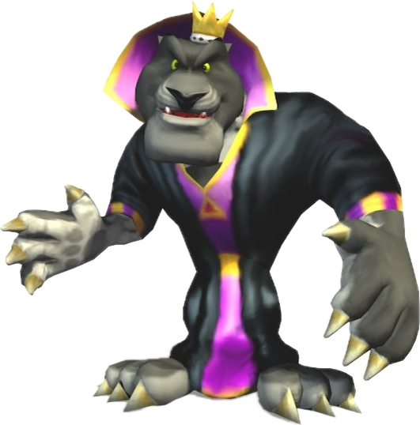
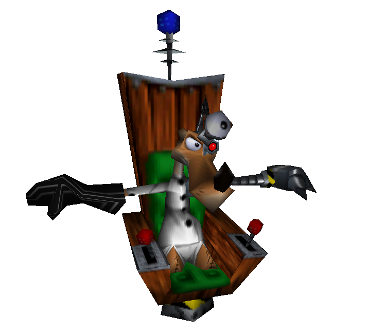
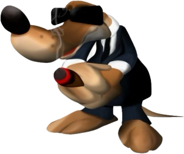

| Images | Name | Characteristics |
|---|---|---|
|  | Panther King | The current monarch of the Kingdom. A selfish and tyrannical individual obsessed with finding a way to fix the table where he places his milk glass. |
|  | Ze Professor Von Kriplesac | An old enemy-turned-servant of the Panther King and the creator of the Tediz Army. |
|  | Don Weaso | The head of the Weasel Mafia, and secretly a loyal servant of the Panther King. |